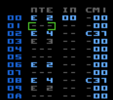

Advanced Controls 1 - More Editing
| Function | Buttons |
|---|---|
| To insert next unused Chain or Pattern | put the cursor where you want the Chain/Pattern to be created then DOUBLE-TAP A |
| To clone a Chain or Pattern | put the cursor on a Chain or Pattern you'd like to clone, hold SELECT then tap A |
Insert Next Unused Chain/Pattern
As you start to edit Chains and Patterns they are internally marked as being used. This then allows Pulsar to be able to find an unused/empty Chain or Pattern automatically.
Clone Chain/Pattern
This function comes in really handy if you want to make variations on an existing Chain or Pattern quickly and easily. The Chain or Pattern number under the cursor is duplicated to a new Chain/Pattern and the number of the new object will replace the old one.
With both of these commands, if there are no free/unused Chains/Patterns, nothing will happen. In this situation, it is possible that there may be empty Chains/Patterns that are not being used in your Song but Pulsar has marked them as being used (perhaps you used them at some point but have since changed your mind). There is a function in the Setup Page, "Clean Songs" which will scan your Song and 'reset' any unused Chains/Patterns, if any exist. Afterwards you might try cloning a Chain/Pattern again and hopefully you'll find that it works. If not, you've probably used all the Chains/Patterns. Sorry!
| Function | Buttons |
|---|---|
| To toggle a note between 'normal' and 'tie' | put the cursor on a note in the Pattern editor, hold SELECT then tap A |
'Normal' and 'Tie' Notes
There are two types of notes in Pulsar, normal and tie notes. When a normal note is played there are many audio parameters that are reset or initialised such as the ADSR envelope being restarted at the Attack phase. A tie note bypasses much of this initialisation which makes it really handy for simulating effects like 'hammer on/pull off' (common guitar technique) or for smoothing out a slide-to-note effect.
In the editor, tie notes appear dark grey to make them visually distinct. When adjusting the pitch of a tie note it will momentarily change colour. This is just to improve readability. To change a tie note back to a normal one just perform the same button press on a tie note.
| Function | Buttons |
|---|---|
| To delete an entire row | put the cursor on the row you want to delete, hold B+A then tap UP |
| To insert a row | put the cursor where you'd like to make the insert, hold B+A then tap DOWN |
Delete Entire Row
The contents of the row your cursor is on is deleted and all rows below are shifted up one step. A "blank" row is added at the end of the table. You cannot delete the last row of any table.
Insert Row
The rows below your cursor are shifted down one step. The contents of the row the cursor is on remains intact. Any rows that get 'pushed off' the bottom of a table are lost forever. You cannot insert a row on the last row of any table.